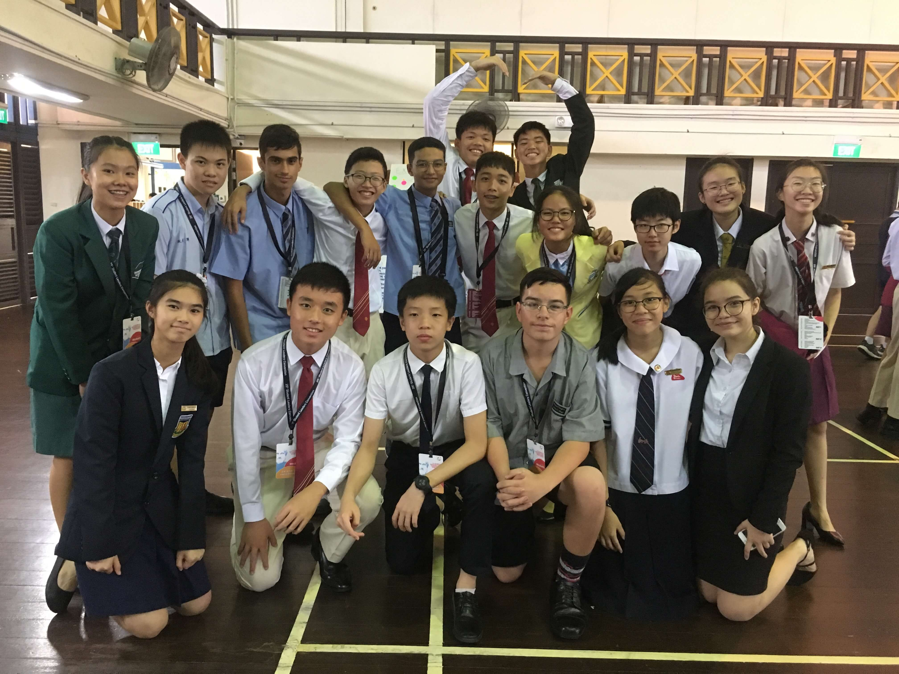

Youth Faculty 1: Social Cohesion
Under Youth Assembly 1: Social Integration
Hello! We are Youth Faculty 1, and the issue we discussed about was Social Cohesion. So what is social cohesion? Well, we defined it as the embracing and understanding of societal differences in order to promote inclusivity. Stigmatisation due to differences such as race, religion, culture and social-economic status is still pervasive today, which fuels discrimination and threatens the progress of globalisation. Thus education plays an important role in solving this issue by promoting civic and societal engagement, which ensures the mitigation of this problem by increasing Social Cohesion, bringing people of different backgrounds together.
However, stigmatisation due to societal divides such as socio-economic status, race and religion, gender and sexuality is still pervasive today, which fuels discrimination, stereotyping and fear mongering which threatens the progress of globalisation.
These are our solutions :)
- Building Unity & Agreement of Action
Understand their communities and measure social cohesion
Engage their communities and build partnerships between key stakeholders
Prevent and respond to incidents of racism or conflict between groups
Strategically plan for the needs of their communities now and into the future
Monitor, evaluate and share outcomes. -
Social cohesion cannot be attained without economic & political stability
Having more job opportunities
Implementing Ethnic Quota - Meritocracy
- Moral Education/ Learning abt other cultures CQ
- Opportunities to interact with people of different backgrounds: School Programmes, like Outward Bound Singapore
Exposure to different communities/ culture
The Lens
This is our Lens Video: We used it to show the current discrimination going on in present-day South Africa. Originally, in the past few centuries, the white people had been oppressing the native blacks in South Africa. But with Nelson Mandela, both parties started to have a more equal standing. However, with the passing of Mandela, what Mandela absolutely did not want for happened: Reverse discrimination took place. Nowadays, its common to see that Blacks are given preferential treatment over the whites, the opposite of what happened in the last few centuries. What should the country do? View our video to hear our opinions about the situation. We hope you enjoy it!
Exhibition
These were our exhibition boards. On the 1st one we have general information, then on the rest we have our solutions and suggestions to how to better social cohesion. Enjoy :)
(here we would include your exhibition boards, hopefully you left it in ops room)
THANK YOU & GOOD BYE :'')
"Friends aren't just by choice, they're by chance"
For the last time, this is YF1, the 1st and the best youth faculty of the 25th SLC, signing off.